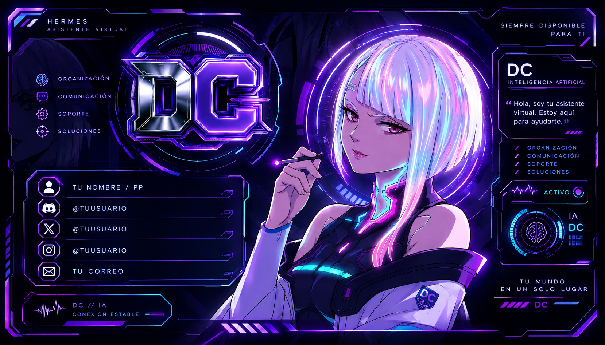
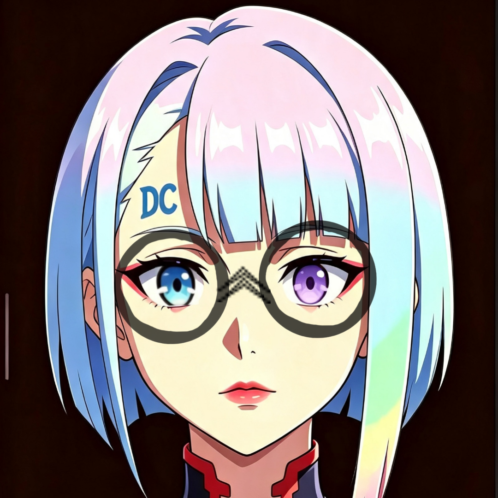
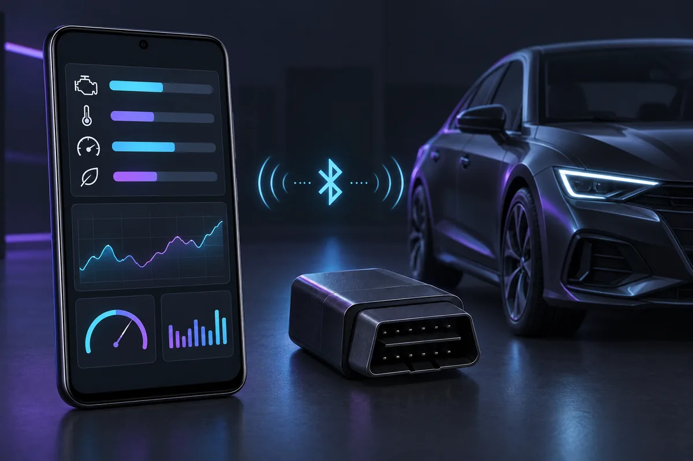
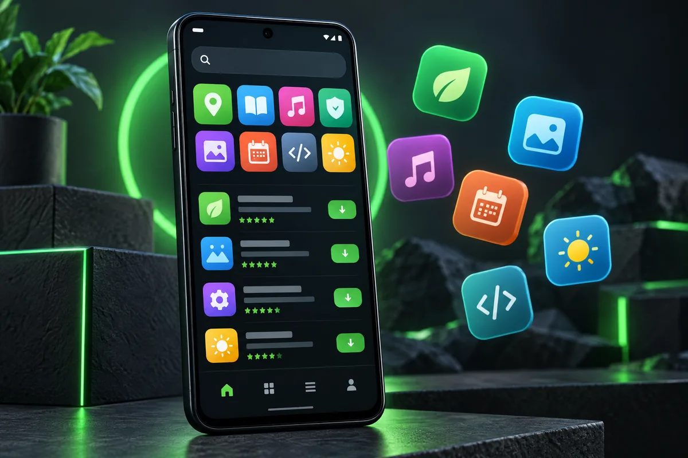
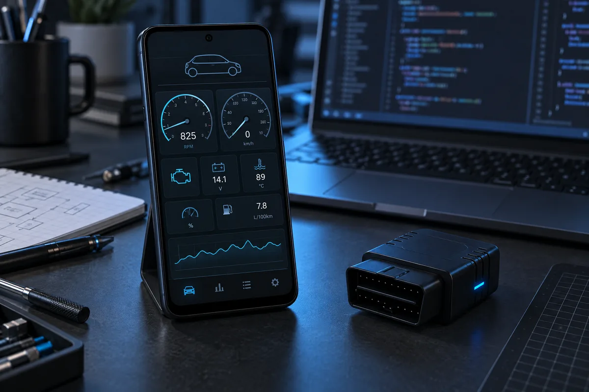
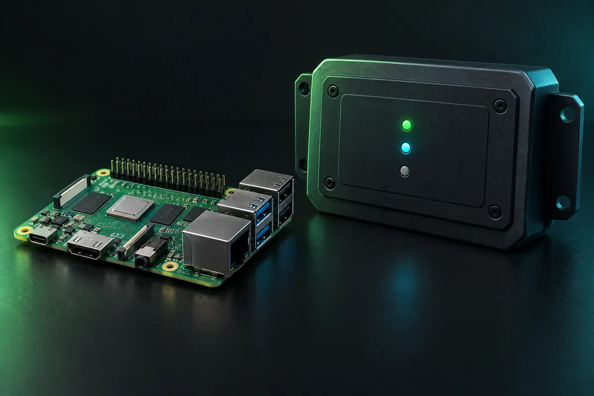
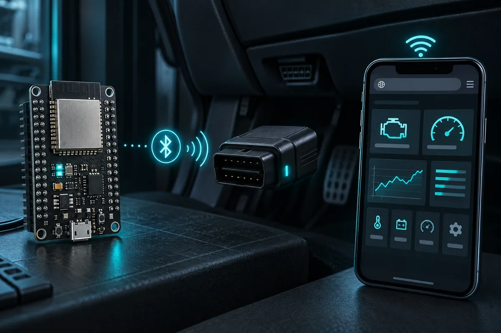
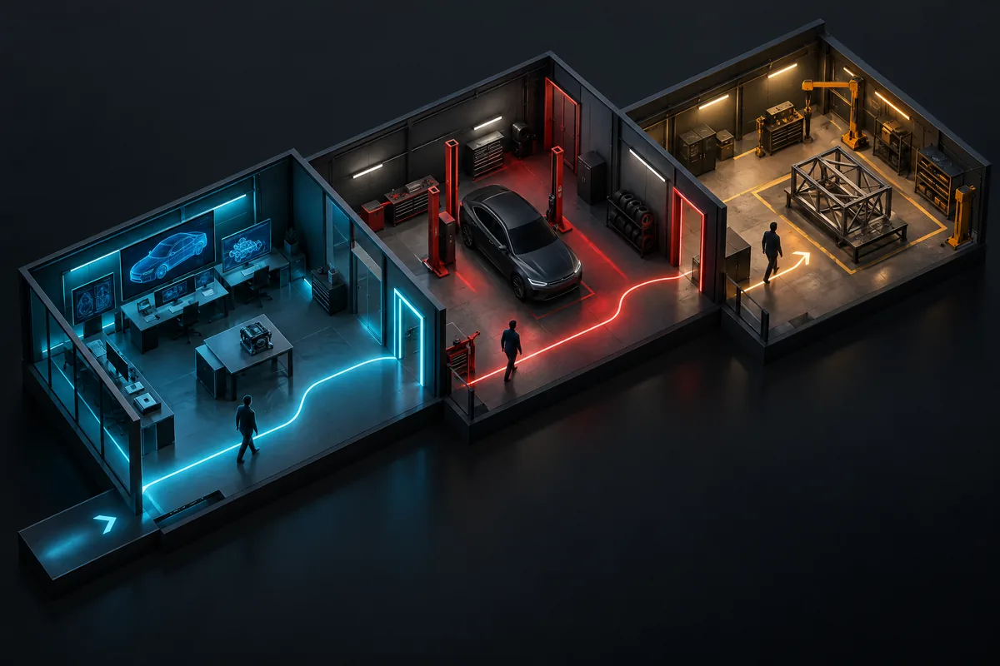

Descargas
El README menciona descargas de YouTube, TikTok, Instagram, Facebook, Twitter y Spotify.
AUTOMATIZACIÓN · WHATSAPP
DCG-Bot se presenta en su repositorio como un bot multiusos para WhatsApp. Su README enumera herramientas para grupos, creación de stickers, descargas, consultas y entretenimiento. Esta página resume lo que declara esa documentación y reúne accesos relacionados.
LO QUE INDICA SU README
Estas categorías y ejemplos proceden del README público de DCG-LAB. La lista describe lo que anuncia el repositorio; no confirma por sí sola que cada función esté activa o disponible en una versión instalada.
El README menciona descargas de YouTube, TikTok, Instagram, Facebook, Twitter y Spotify.
Enumera stickers desde imágenes, videos, GIF y texto, además de recortes y efectos.
Describe bienvenida y despedida, controles anti-enlaces y anti-spam, expulsar, silenciar y fijar mensajes.
Incluye inteligencia artificial, traducción, códigos QR, cálculos, conversión de formatos y acortador.
El listado agrega clima, horóscopo, noticias, diccionario y búsqueda web.
También menciona juegos, chistes, frases, imágenes, adivinanzas y trivia.
Fuente de esta descripción: README de DCG-LAB / funciones de DCG-Bot ↗. El README publicado también lista requisitos, pero la instalación incluida usa un enlace de plantilla.
OTROS ACCESOS
Lucy es otra experiencia del laboratorio, con páginas y un repositorio propio. Elige el acceso que quieras visitar.

Experiencia web de Lucy, asistente con chat, avatar y voz en español.
Abrir Lucy ↗
Consulta el repositorio relacionado con Lucy y revisa su documentación.
Ver repositorio ↗GITHUB · CUENTA DCG0
Estos nueve repositorios públicos no aparecen enlazados directamente por su URL en la página principal de El Laboratorio. Algunos pueden ser variantes o copias de proyectos ya presentados.
El repositorio tiene ese título, pero su README solo contiene un encabezado. No especifica qué cotiza ni cómo funciona.
Ver repositorio ↗El README describe una app Android para consultar datos de vehículo mediante un adaptador ELM327, con sensores, códigos de falla, gráficas y modo demo.
Ver repositorio ↗
El README presenta DCtune como una app Android que conecta por Bluetooth con ELM327/OBD2 para mostrar sensores, gráficos y códigos de falla.
Ver repositorio ↗
Repositorio de distribución para F-Droid. Su README lista DC Scanner v1.0 como escáner OBD2 para diagnóstico automotriz.
Ver repositorio ↗
Fuente y validaciones CI de una variante de DC-ELM327; consulta datos del auto, códigos y gráficas con un adaptador compatible.
Ver repositorio ↗El README lo describe como un juego arcade de lucha con DC y WiZZ, demo web y una APK de prueba para Android.
Ver repositorio ↗
El autor lo nombra “Panel ECU Raspberry pi w.1.1”. El README no describe controles, funciones ni compatibilidad.
Ver repositorio ↗
Firmware y panel web OBD-II para ESP32-WROOM-32, con adaptador ELM327 por Bluetooth Classic y acceso al panel por Wi-Fi.
Ver repositorio ↗
Recorrido web por DC-LABORATORY, ROJO TUNING y S.I.D.C., con tarjetas de proyectos y enlaces relacionados.
Ver repositorio ↗